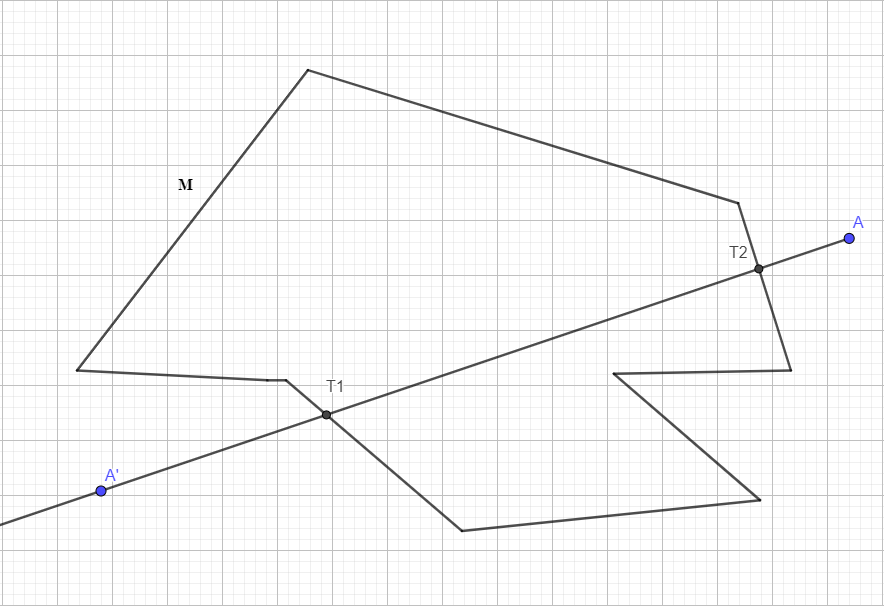
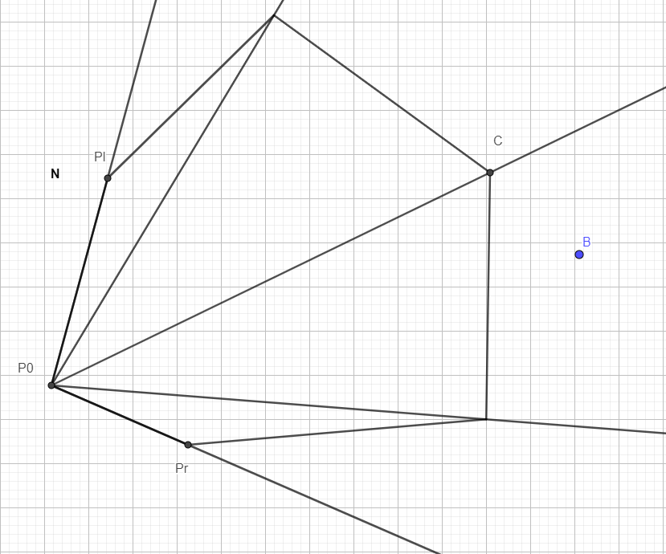

Главная страница Видео
Взаимное расположение точки и многоугольника.
Сегодня мы рассмотрим алгоритмы определения взаимного расположения точки и многоугольника.
- Общий случай:
- Определения взаимного расположения точки и выпуклого многоугольника: 
Рассмотрим произвольный многоугольник M (см. рисунок) и точку A, расположение которой нам нужно определить. Выберем произвольную точку A'на плоскости. Проведем луч AA' . Если этот луч пересекает стороны многоугольника четное количество раз, тогда точка вне многоугольника, если нечетное, тогда в многоугольнике.
Вам стоит сначала решить небольшое количество подзадач, которые помогут в решении этой большой. Например: Определить, пересекается ли луч с отрезком.
Это довольно простая задача, поэтому я могу дать вам только подсказку: Используйте псевдоскалярное произведение векторов. Существует и другой алгоритм.
Рассмотрим произвольный выпуклый многоугольник N и точку B (см. рисунок). Выберем любую вершину и назовем ее P0 .Проведем лучи из P0 в каждую вершину многоугольника.
Введем l=1 и r=n-1, где n-количество углов многоугольника и целочисленный c=(l+r)/2. Возьмем точку под номером c, l, и r, назовем из точками C, Pl и Pr соответственно.
Определим, в каком углу лежит точка B – в PlP0C или CP0Pr. Если в PlP0C, тогда r приравниваем к C и снова высчитываем C. Если углу CP0Pr, тогда l приравниваем к C и снова высчитываем C. Если точка не принадлежит никакому из углов, тогда точка лежит вне многоугольника. И так повторяем, пока вершины Pl и Pr не станут соседними.
Мы определили, какому углу принадлежит точка B. Проведем отрезок P0B. Если отрезок пересекается с отрезком PlPr, тогда точка B лежит вне многоугольника, если же не пересекаются, тогда, точка B лежит внутри многоугольника.
Этот алгоритм называется бинарным поиском.